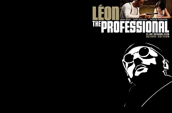
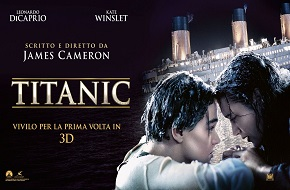
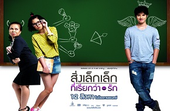

富豪刘轩（邓超饰）的地产计划涉及填海工程，威胁靠海为生的居民。因为人类对大海及生态的破坏，美人鱼只能被赶到了一艘破船里艰难生存，背负家族秘密的珊珊（林允饰）被派遣前往阻...
自喻为“玉面小飞龙”的郑微，怀着对邻家哥哥林静的爱意考入大学。当她联系林静的时候，却发现林静不告而别，匆匆出国留学。生性豁达的她与同宿舍女生之间结下了深厚的友谊. ...
十七岁的女孩李珥，左耳听力不好，如果站在左边说话就听不见，不起眼而内向的李珥某天突然就暗恋男生许弋，黎吧啦因为爱上张漾而帮助他勾引许弋，暗恋许弋的李珥偶然间. ...
年近三十的陈寻在90后女孩七七追问下，回忆起了自己与方茴的同居时光。 当年近而立的陈寻再次回忆这段纯真感情时加入了思考和反省。这既是陈寻的青春记忆. ...

这个杀手不太冷
里昂（让·雷诺饰）是意大利裔的顶尖职业杀手，一直孤独的住在纽约小意大利，只有一株盆栽是他最好的朋友。他形容：“他比人友善多了。他跟我一样沉默，从来不会问问题，也不会想杀我。他也跟我. ...

泰坦尼克号
1912年4月15日，载着1316号乘客和891名船员的豪华巨轮“泰坦尼克号”与冰山相撞而沉没，这场海难被认为是20世纪人间十大灾难之一。1985年，“泰坦尼克号”的沉船遗骸在北大西洋两英里半的海底. ...
沪都大学330宿舍的四位性格迥异的兄弟，在毕业之际各自遭遇了情感、学业、工作上的挫折。聪明贪玩、厚脸皮的大男孩林向宇（陈晓饰）与女上司姐弟恋，引得周遭非议；聪明贪玩、自在逍遥的富二代李大鹏（杜天皓饰）无所事事 ...
阳光男孩黄天阔（彭于晏饰）的父母经营着一家便当店，某天，他在为听障游泳队送便当时邂逅了清纯美丽的姐妹花——小朋（陈妍希饰）和秧秧（陈意涵饰）。姐妹俩的父亲是一名传教士，常年在非洲工作。为了保障姐姐顺利参加听障奥运会 ...

初恋这件小事
小水是初中一年级一个最最平凡的小女孩，但这位女孩偏偏爱上了学校中最优秀、最善良、也最帅气的高一男生——阿亮。于是她做了很多傻傻的小事，只为能引起阿亮的注意。申请加入舞蹈社却在筛选时被喜欢阿亮的同学小菲羞辱；她不惜参演. ...